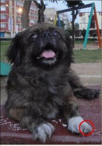
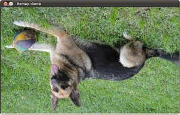

Remapping
Goal
In this tutorial you will learn how to:
- Use the OpenCV function cv::remap to implement simple remapping routines.
Theory
What is remapping?
It is the process of taking pixels from one place in the image and locating them in another position in a new image.
To accomplish the mapping process, it might be necessary to do some interpolation for non-integer pixel locations, since there will not always be a one-to-one-pixel correspondence between source and destination images.
We can express the remap for every pixel location \((x,y)\) as:
\[g(x,y) = f ( h(x,y) )\]where \(g()\) is the remapped image, \(f()\) the source image and \(h(x,y)\) is the mapping function that operates on \((x,y)\).
Let’s think in a quick example. Imagine that we have an image \(I\) and, say, we want to do a remap such that:
\[h(x,y) = (I.cols - x, y )\]What would happen? It is easily seen that the image would flip in the \(x\) direction. For instance, consider the input image:
observe how the red circle changes positions with respect to x (considering \(x\) the horizontal direction):
In OpenCV, the function cv::remap offers a simple remapping implementation.
Code
What does this program do?
- Loads an image
- Each second, apply 1 of 4 different remapping processes to the image and display them indefinitely in a window.
- Wait for the user to exit the program
The tutorial code’s is shown lines below. You can also download it from here
#include "opencv2/imgcodecs.hpp" #include "opencv2/highgui.hpp" #include "opencv2/imgproc.hpp" #include <iostream> using namespace cv; Mat src, dst; Mat map_x, map_y; const char* remap_window = "Remap demo"; int ind = 0; void update_map( void ); int main( int, char** argv ) { src = imread( argv[1], IMREAD_COLOR ); dst.create( src.size(), src.type() ); map_x.create( src.size(), CV_32FC1 ); map_y.create( src.size(), CV_32FC1 ); namedWindow( remap_window, WINDOW_AUTOSIZE ); for(;;) { char c = (char)waitKey( 1000 ); if( c == 27 ) { break; } update_map(); remap( src, dst, map_x, map_y, INTER_LINEAR, BORDER_CONSTANT, Scalar(0, 0, 0) ); // Display results imshow( remap_window, dst ); } return 0; } void update_map( void ) { ind = ind%4; for( int j = 0; j < src.rows; j++ ) { for( int i = 0; i < src.cols; i++ ) { switch( ind ) { case 0: if( i > src.cols*0.25 && i < src.cols*0.75 && j > src.rows*0.25 && j < src.rows*0.75 ) { map_x.at<float>(j,i) = 2*( i - src.cols*0.25f ) + 0.5f ; map_y.at<float>(j,i) = 2*( j - src.rows*0.25f ) + 0.5f ; } else { map_x.at<float>(j,i) = 0 ; map_y.at<float>(j,i) = 0 ; } break; case 1: map_x.at<float>(j,i) = (float)i ; map_y.at<float>(j,i) = (float)(src.rows - j) ; break; case 2: map_x.at<float>(j,i) = (float)(src.cols - i) ; map_y.at<float>(j,i) = (float)j ; break; case 3: map_x.at<float>(j,i) = (float)(src.cols - i) ; map_y.at<float>(j,i) = (float)(src.rows - j) ; break; } // end of switch } } ind++; }
Explanation
Create some variables we will use:
Mat src, dst; Mat map_x, map_y; char* remap_window = "Remap demo"; int ind = 0;
Load an image:
src = imread( argv[1], 1 );
Create the destination image and the two mapping matrices (for x and y )
dst.create( src.size(), src.type() ); map_x.create( src.size(), CV_32FC1 ); map_y.create( src.size(), CV_32FC1 );
Create a window to display results
namedWindow( remap_window, WINDOW_AUTOSIZE );
Establish a loop. Each 1000 ms we update our mapping matrices (mat_x and mat_y) and apply them to our source image:
while( true ) { char c = (char)waitKey( 1000 ); if( c == 27 ) { break; } update_map(); remap( src, dst, map_x, map_y, INTER_LINEAR, BORDER_CONSTANT, Scalar(0,0, 0) ); imshow( remap_window, dst ); }
The function that applies the remapping is cv::remap. We give the following arguments:
- src : Source image
- dst : Destination image of same size as src
- map_x : The mapping function in the x direction. It is equivalent to the first component of \(h(i,j)\)
- map_y : Same as above, but in y direction. Note that map_y and map_x are both of the same size as src
- INTER_LINEAR : The type of interpolation to use for non-integer pixels. This is by default.
- BORDER_CONSTANT : Default
How do we update our mapping matrices mat_x and mat_y? Go on reading:
Updating the mapping matrices: We are going to perform 4 different mappings:
Reduce the picture to half its size and will display it in the middle:
\[h(i,j) = ( 2*i - src.cols/2 + 0.5, 2*j - src.rows/2 + 0.5)\]for all pairs \((i,j)\) such that: \(\dfrac{src.cols}{4}<i<\dfrac{3 \cdot src.cols}{4}\) and \(\dfrac{src.rows}{4}<j<\dfrac{3 \cdot src.rows}{4}\)
Turn the image upside down: \(h( i, j ) = (i, src.rows - j)\)
Reflect the image from left to right: \(h(i,j) = ( src.cols - i, j )\)
Combination of b and c: \(h(i,j) = ( src.cols - i, src.rows - j )\)
This is expressed in the following snippet. Here, map_x represents the first coordinate of h(i,j) and map_y the second coordinate.
for( int j = 0; j < src.rows; j++ ) { for( int i = 0; i < src.cols; i++ ) { switch( ind ) { case 0: if( i > src.cols*0.25 && i < src.cols*0.75 && j > src.rows*0.25 && j < src.rows*0.75 ) { map_x.at<float>(j,i) = 2*( i - src.cols*0.25 ) + 0.5 ; map_y.at<float>(j,i) = 2*( j - src.rows*0.25 ) + 0.5 ; } else { map_x.at<float>(j,i) = 0 ; map_y.at<float>(j,i) = 0 ; } break; case 1: map_x.at<float>(j,i) = i ; map_y.at<float>(j,i) = src.rows - j ; break; case 2: map_x.at<float>(j,i) = src.cols - i ; map_y.at<float>(j,i) = j ; break; case 3: map_x.at<float>(j,i) = src.cols - i ; map_y.at<float>(j,i) = src.rows - j ; break; } // end of switch } } ind++; }
Result
After compiling the code above, you can execute it giving as argument an image path. For instance, by using the following image:

This is the result of reducing it to half the size and centering it:

Turning it upside down:

Reflecting it in the x direction:

Reflecting it in both directions:
